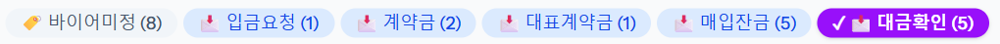
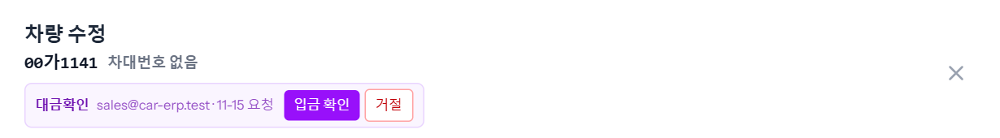
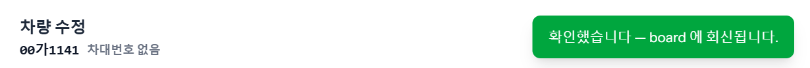

바이어가 돈을 보냈다고 하면 영업이 board 에서 「판매대금 확인해 주세요」를 보냅니다. 한 바이어의 차 여러 대가 한 번에 올 수 있습니다. 재무가 통장을 보고 입금을 기록한 뒤 [입금 확인]으로 board 에 회신합니다. 이 요청에는 금액도 계좌도 없습니다 — 받은 돈은 통장에서 확인합니다.
요청이 들어오면 알림톡이 가고(받는 사람은 회사 설정), 차량 관리 필터 줄에 보라색 「대금확인」 버튼이 건수와 함께 뜹니다. 누르면 확인할 차만 남습니다.

보낸 영업과 요청한 날이 나옵니다. 같은 요청으로 묶여 온 다른 차도 각각 이 카드가 붙어 있습니다.

들어온 돈은 판매 탭 「입금 현황」에 잔금으로 넣고 확정합니다(씬 「판매 입금」). 한 번에 여러 대 값이 들어왔으면 「바이어 정산현황」에서 나눕니다(씬 「바이어 정산현황」).
「확인했습니다 — board 에 회신됩니다」가 뜨고 카드가 없어집니다. board 의 영업 화면에서 그 차가 확인됨으로 바뀝니다. 차마다 따로 누릅니다 — 묶음 중 들어온 차만 확인하고 나머지는 남겨 둘 수 있습니다.
